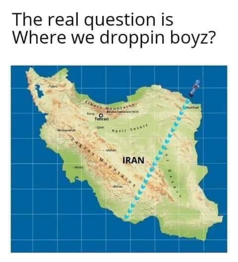
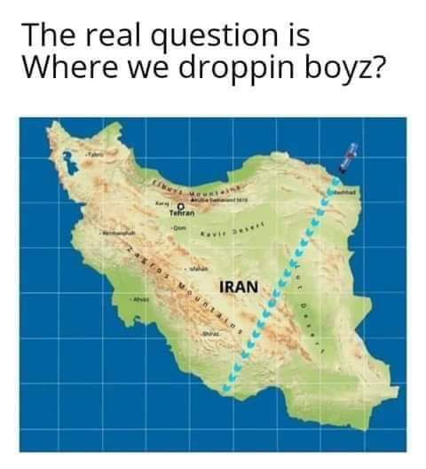

World War III IRAN GETS GOPED
 


Is World War 3 official?
World War 3 fears were triggered on Friday, January 3, after the US-led an airstrike killing one of Iran’s most decorated military leaders, Qassem Soleimani.
The drone airstrike took place near Baghdad airport and resulted in the death of the Quds Force commander and additionally killed Abu Mahdi al-Muhandis, the deputy commander of Iran-backed militias known as the Popular Mobilization Forces (PMF).
In a statement about the attack, the Pentagon said: “At the direction of the president, the US military has taken decisive defensive action to protect US personnel abroad by killing Qassem Soleimani.”
It added: “This strike was aimed at deterring future Iranian attack plans.
“The United States will continue to take all necessary action to protect our people and our interests wherever they are around the world.”